Ⅰ. 서 론
1.1 연구 배경
2025년 8월 국내 증권가에 뷰티 업계를 뒤흔든 소식이 전해졌다. 2014년 창업해 업력 10여 년 정도의 중견기업인 에이피알이 ‘K뷰티 공룡’ 아모레퍼시픽의 시가총액을 추월한 것이다. 에이피알은 2024년 2월 코스피에 상장한 지 약 1년 반 만에 주가가 250% 이상 올랐고 2025년 8월 6일 종가 기준 시총 7조9322억원으로 집계되며 국내 화장품 업종 시가총액 1위였던 아모레퍼시픽(7조5339억원)을 처음으로 제쳤다. 이후에도 주가가 올라 2026년 4월 24일 기준 에이피알의 시총은 16.85조 원에 달한다. 같은 날 아모레퍼시픽의 시총은 8.96조 원 수준이다. 오랫동안 국내 화장품 산업의 상징처럼 자리 잡아온 전통 강자를 K뷰티 스타트업으로 출발한 에이피알이 시총 기준으로 역전했다는 소식은 시장의 이목을 단숨에 집중시켰다.
그림 1. 에이피알-아모레퍼시픽 시가총액 비교
(출처: 한국거래소 데이터를 바탕으로 필자 작성)
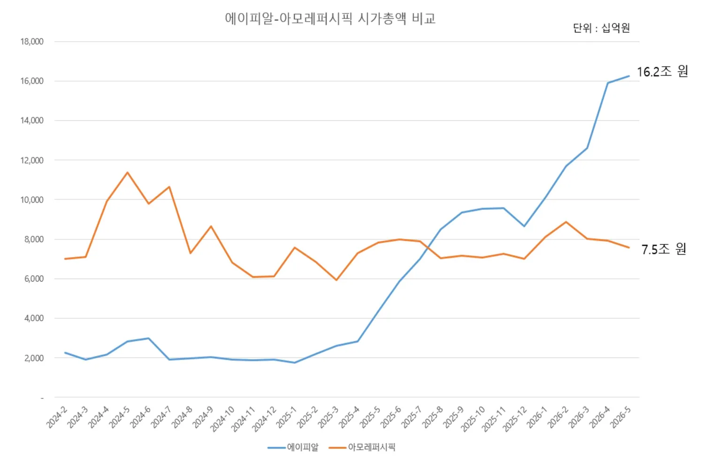
물론 매출 규모만 놓고 보면 여전히 아모레퍼시픽이 에이피알에 비해 훨씬 크다. 아모레퍼시픽은 2025년 연결 기준 매출 4조 6232억 원, 영업이익 3680억 원을 기록했고, 에이피알은 2025년 연결 기준 매출 1조 5273억 원과 영업이익 3654억 원을 기록했다. 에이피알의 매출이 상대적으로 낮음에도 더 높은 기업 가치가 형성돼 있다는 건 에이피알의 성장 가능성과 사업 모델의 확장성에 대한 시장의 기대가 크다는 것을 의미한다. 단순히 잘 파는 화장품 브랜드를 넘어 뷰티 디바이스, 의료기기까지 아우르는 뷰티테크 기업으로의 진화 가능성에 대한 기대가 시가총액에 선반영된 셈이다. 또한 지난해 에이피알의 영업이익(3654억 원)과 아모레퍼시픽의 영업이익(3680억 원)이 거의 대등해졌다는 점은 에이피알 사업 모델의 효율성을 보여주기도 한다.
그림 2. 에이피알-아모레퍼시픽 영업이익 추이 비교
(출처: DART 공시 데이터 바탕으로 필자 작성)
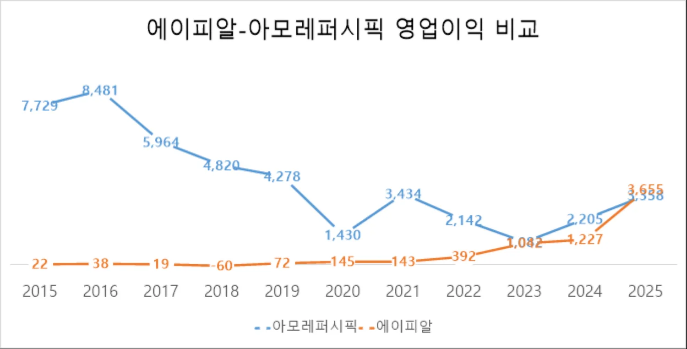
표 1. 에이피알 주요 제품 매출 현황
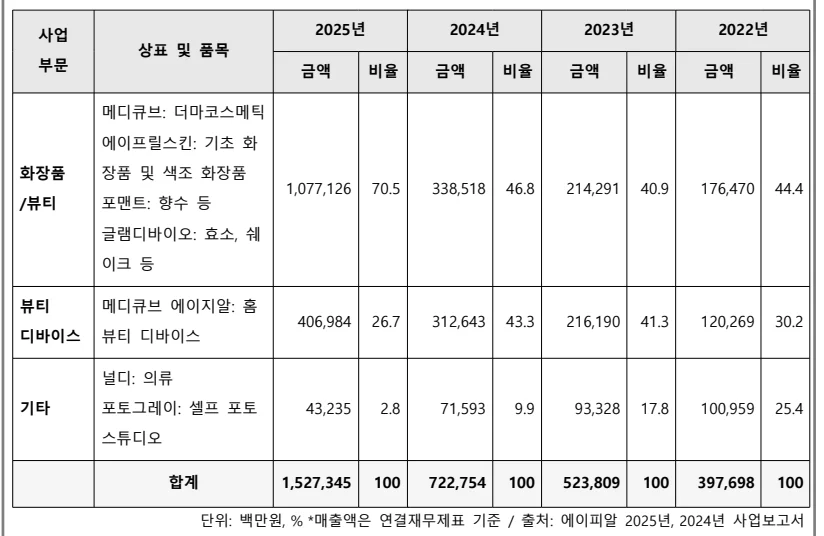
그림 3. 에이피알 기업 개요
(출처: 필자 재구성)
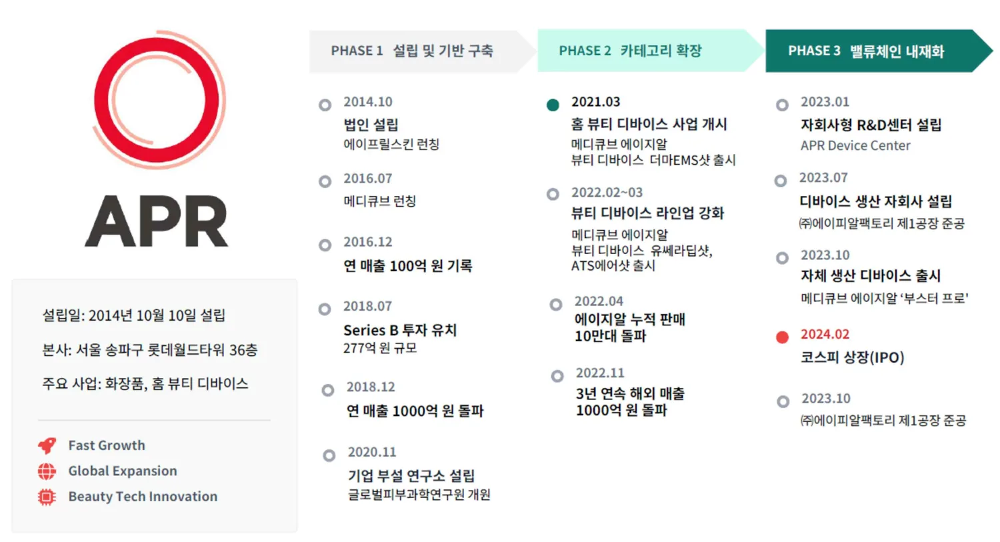
실제로 에이피알은 2014년 첫 화장품 브랜드 에이프릴스킨(APRILSKIN) 론칭을 시작으로 2016년에는 더마 코스메틱(Dermatology와 Cosmetic의 합성어로 화장품에 피부과학의 전문성을 더한 효능 중심의 스킨케어 제품) 브랜드 메디큐브(Medicube)를 론칭해 ‘제로모공패드’를 히트시키며 기능성 스킨케어 시장에서 확실한 입지를 다졌다. 이후 메디큐브라는 단일 브랜드 아래에서 다시 한번 카테고리 확장을 시도하며 2021년 홈 뷰티 디바이스 브랜드 ‘에이지알(AGE-R)’을 출시해 피부과 시술을 대체·보완하는 새로운 시장을 열었다. 에이피알의 화장품 및 뷰티 디바이스 에이지알은 국내는 물론 해외 소비자의 호응을 얻으며 꾸준히 성장해 2024년 12월 31일 기준 해외 매출 비중이 55%로 국내 매출을 넘어섰고, 2025년 12월 31일 기준으로는 해외 매출 비중이 80%로 급성장했다.
에이피알의 글로벌 성장은 개별 기업의 성공을 넘어 K뷰티 산업 전체의 부상이라는 거시적 흐름 위에 놓여 있다. 한국 화장품 수출은 2015년 29억 달러에서 2024년 102억 달러로 10년 만에 약 3.5배(연평균 14.8%) 성장하며 세계 화장품 수출 순위 9위에서 3위로 뛰어올랐다. 같은 기간 부동의 1위 프랑스(128억→234억 달러, 연평균 6.9%)는 물론 2위 미국(88억→112억 달러, 연평균 2.8%), 독일(71억→91억 달러, 연평균 2.8%), 이탈리아(39억→83억 달러, 연평균 8.8%) 등 주요 경쟁국의 성장세를 압도하는 속도였다. 식약처에 따르면 2025년에는 연간 수출 114억 달러를 기록하며 역대 최대 실적을 다시 경신했고, 미국이 22억 달러로 중국을 제치고 수출 대상국 1위에 올라서는 등 수출 지형 자체도 크게 바뀌었다.
그림 4. 세계 화장품 시장 주요 상위국 수출 현황
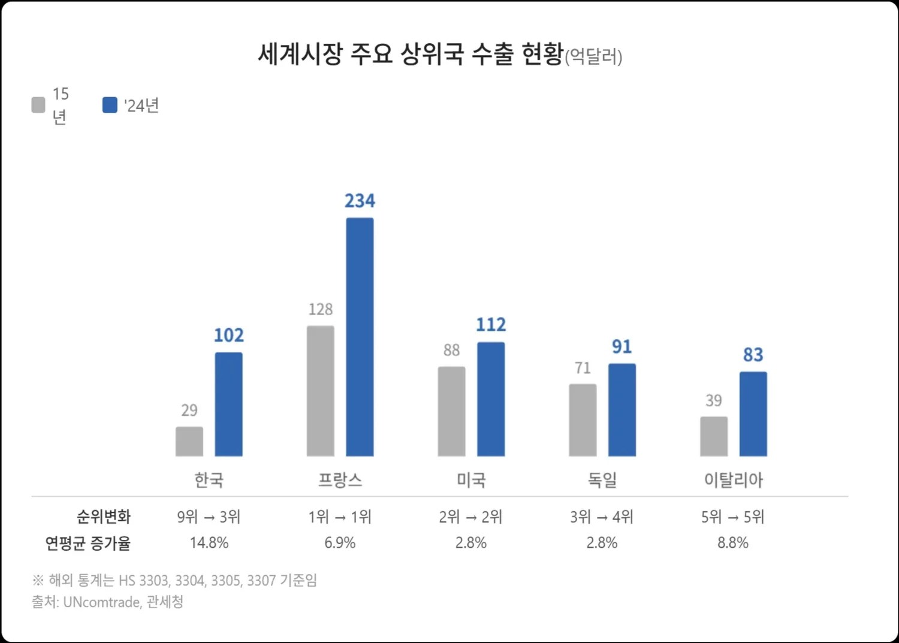
이런 양적 성장은 질적 경쟁력의 강화와 궤를 같이한다. 한 나라의 특정 품목이 수출에서 얼마나 경쟁력을 가지는지를 보여주는 무역특화지수(TSI: Trade Specialization Index, 수출액과 수입액의 차이를 수출입 총액으로 나눈 값으로 -1에서 1 사이의 값을 가지며 1에 가까울수록 수출경쟁력이 높다고 판단)를 보면 한국 화장품의 TSI는 2013년 -0.05에서 2025년 0.73으로 꾸준히 상승하며 역대 최고치를 기록했다.
한편 산업통상자원부에 따르면 2025년 한국 최대 수출 품목인 반도체는 AI 데이터센터 수요에 힘입어 역대 최대인 수출액 1734억 달러를 기록했다. 반도체는 수출 규모에서는 화장품을 압도하지만 TSI 기준으로는 화장품(0.73)이 반도체(0.39)를 크게 상회하고 있다. 이는 반도체가 장비·소재·설계 자산 등을 대규모로 수입해야 하는 구조인 반면, 화장품은 국내에서 기획·개발·생산한 완제품을 해외에 수출하는 비중이 압도적으로 높아 부가가치가 국내에 머무르는 산업 구조를 가지고 있기 때문이다. K뷰티를 반도체, 자동차에 이어 한국의 차세대 수출 효자 품목이자 미래 먹거리로 주목해야 하는 이유가 여기에 있다.
그림 5. 한국 화장품과 반도체의 무역특화지수(TSI) 추이 비교
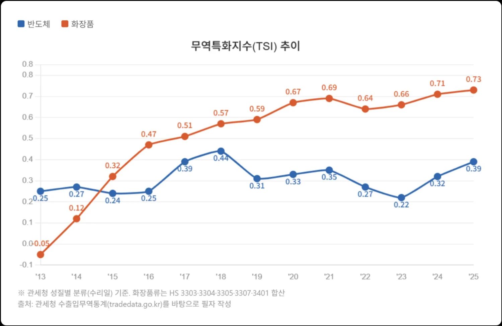
1.2 연구 주제 및 연구 질문
그렇다면 이 같은 K뷰티 산업의 구조적 성장 속에서 개별 기업은 어떻게 경쟁우위를 구축하고 있는가. 에이피알은 이 질문에 답할 수 있는 가장 극적인 사례다. K뷰티 산업은 ODM 중심의 낮은 진입 장벽과 빠른 제품 회전율로 인해 수많은 브랜드가 등장하고 사라지는 대표적인 레드오션이다. 이런 환경에서 대부분의 신생 브랜드는 초기 히트 상품 하나에 의존하다가 시간이 흐르면서 경쟁력을 잃는 패턴을 반복해왔다. 그런데 에이피알은 같은 산업 구조 속에서 오히려 기존 대기업 주도의 시장 지형을 재편하며 업력 10여 년 만에 K뷰티 시가총액 1위 기업으로 부상했다.
연구 배경에서 살펴본 것처럼 K뷰티 산업 전체가 구조적 성장기에 있지만 산업의 성장이 곧 개별 기업의 성공을 보장하진 않는다. 같은 시기에 수많은 신생 K뷰티 브랜드가 생겨났지만 에이피알처럼 국내를 넘어 글로벌 시장으로까지 폭발적으로 성장하며 기존 강자를 추월한 사례는 찾기 어렵다. 업력 10여 년 만에 아모레퍼시픽의 시가총액을 추월한 에이피알의 성장 궤적은 단순히 가격 경쟁력이나 한류 효과가 아닌 기업 고유의 전략적 선택과 구조적 혁신에서 비롯됐음을 시사한다. 본 연구는 에이피알 사례의 심층 분석을 통해 경쟁이 치열한 K뷰티 산업에서 후발 주자가 시장 지형을 재편하며 기존 강자를 추월해 성장할 수 있었던 혁신 패턴을 규명해 K뷰티 산업에서 경쟁우위를 구축하고자 하는 기업들에 시사점을 제공하고자 한다. 이를 위해 도출한 연구 질문은 다음과 같다.
첫째, 에이피알이 경쟁이 치열한 K뷰티 산업에서 기존 대기업 주도의 산업 지형을 재편하며 성장할 수 있었던 핵심 요인은 무엇인가.
둘째, 에이피알의 성장 궤적과 혁신 패턴이 K뷰티 산업에서 경쟁우위를 구축하고자 하는 기업들에 주는 전략적 시사점은 무엇인가.
1.3 연구 방법
본 연구는 필자가 직접 인터뷰를 토대로 작성해 DBR(동아비즈니스리뷰)에 게재한 에이피알(APR) 사례(최호진, 2025)에 Christensen의 파괴적 혁신 이론과 Moore의 캐즘 이론을 적용하고 특허 분석을 더해 심화·발전시킨 것이다. 연구 자료는 1차 자료(Primary Data)와 2차 자료(Secondary Data)를 병행해 수집했다. 1차 자료의 핵심은 세 가지 유형의 심층 인터뷰로 구성된다. 첫째, 에이피알 내부 관점을 확보하기 위해 2025년 10월 29일 신재하 CFO(부사장)와 허준 PR팀장을 인터뷰했다. 창업 초기 비즈니스 모델의 선택 배경, 카피캣 위기가 촉발한 전략 전환의 내막, 밸류체인 내재화를 결정한 시점과 논리, PDRN 사업의 전략적 포지셔닝 등을 중심으로 질문했다.
둘째, 기존 시장 강자의 시각을 확인하기 위해 2025년 9월 아모레퍼시픽 관계자를 취재했다. 에이피알의 부상이 기존 뷰티 대기업의 전략에 어떤 영향을 미치고 있는지, 에이피알을 경쟁 위협으로 인식하고 있는지를 파악하기 위해서였다.
셋째, 학술적 관점에서의 외부 검증을 위해 한국 뷰티 시장과 K뷰티 유통 채널인 CJ올리브영의 비즈니스 모델을 분석한 케이스 스터디(Olive Young: Formulating Beauty Innovation, 2025)를 저술한 하버드경영대학원의 레베카 카프(Rebecca Karp) 교수를 2025년 11월 6일 화상 인터뷰했다. 에이피알의 성장 궤적이 혁신 이론의 관점에서 어떻게 해석될 수 있는지에 대한 학술적 의견을 구했다.
에이피알 내부 관계자 인터뷰만으로는 관점이 편향될 수 있다는 한계를 인식하고 기업 내부(에이피알)–기존 강자(아모레퍼시픽)–외부 전문가(학계)라는 세 관점을 교차시킴으로써 분석의 균형을 잡고자 했다. 이밖에 2차 자료로 에이피알 IR 자료 및 사업보고서, 에이피알 공식 보도자료, 특허 공보, 애널리스트 리포트, 김병훈 에이피알 대표의 미디어 인터뷰를 비롯한 언론 보도 등을 활용해 인터뷰에서 확인한 전략적 판단과 의사결정의 맥락을 객관적 사실 관계와 대조해 검증했다.
Ⅱ. 이론적 프레임워크
2.1 Disruptive Innovation
Christensen(1997)은 기존 시장의 질서를 근본적으로 뒤엎는 혁신의 메커니즘을 '파괴적 혁신(Disruptive Innovation)'이라는 개념으로 설명했다. 기존 주류 제품 대비 성능은 낮지만 단순함, 접근성, 합리적 가격이라는 새로운 가치를 앞세워 시장 구조 자체를 바꾸는 혁신이다. 이는 기존 제품의 성능을 더 높이는 데 집중하는 존속적 혁신(Sustaining Innovation)과 본질적으로 다르다.
파괴적 혁신자는 두 가지 경로로 시장에 진입한다. 하나는 기존 시장 하단부를 공략하는 로우엔드 파괴(Low-end disruption)다. 주류 제품이 대다수 고객에게 필요 이상의 성능을 제공하는 오버슈팅(Overshooting) 상태에 놓여 있을 때 더 단순하고 저렴한 대안이 이 고객들을 빼앗아온다. 다른 하나는 신시장 파괴(New-market disruption)다. 기존 제품이 너무 비싸거나 복잡해서 아예 소비하지 못하던 비소비층(Non-consumption)을 새로운 시장으로 끌어들이는 것이다.
파괴적 혁신의 궤적은 단계적으로 전개된다. 처음에는 '충분한 성능(Good enough)' 수준의 제품으로 시장 하단부나 비소비층에 발판을 마련한다. 이후 기술과 성능을 빠르게 개선하며 주류 시장의 기대치를 따라잡고, 궁극적으로는 기존 강자의 고객까지 흡수하는 Upmarket migration에 이른다. Christensen은 이 과정에서 기존 강자가 합리적 의사결정을 하면서도 파괴적 혁신에 무력해지는 구조적 원인을 '혁신자의 딜레마(The Innovator's Dilemma)'라 불렀다. 현재 가장 수익성 높은 고객에게 집중하는 것이 합리적이기 때문에, 초기에 시장 규모가 작고 수익성이 낮은 파괴적 혁신을 체계적으로 무시하게 된다는 것이다.
2.2 Chasm Theory와 Whole Product
Moore(1991)는 혁신 기술이 초기 열광을 넘어 대중 시장에 안착하는 데 실패하는 패턴에 주목했다. 기술 수용 주기(Technology Adoption Life Cycle)상 초기 수용자(Early Adopters)와 실용주의적 다수(Early Majority) 사이에는 단순한 간극이 아닌 구조적 단절이 존재하며, Moore는 이를 캐즘(Chasm)이라 명명했다. 초기 수용자는 기술의 잠재력만으로도 불완전한 제품을 받아들이지만, 실용주의적 다수는 검증된 솔루션과 완결된 사용 경험을 요구한다. 구매 동기 자체가 다르기 때문에 초기의 성공이 자연스럽게 대중 시장 확산으로 이어지지 않는 것이다.
Moore가 캐즘 돌파의 핵심 전략으로 제시한 것이 Whole Product(완전한 제품) 개념이다. 핵심 기술 제품만으로는 실용주의적 다수를 설득할 수 없으며, 고객이 기대한 가치를 온전히 경험할 수 있는 완결된 시스템을 제공해야 한다는 것이다. Whole Product는 네 개의 층위로 이뤄진다. 핵심 제품(Core Product)은 기술적 차별성을 담은 제품 자체다. 기대 제품(Expected Product)은 고객이 당연히 기대하는 최소한의 기능과 품질이다. 확장 제품(Augmented Product)은 사용 경험을 극대화하는 보완재, 서비스, 콘텐츠, 고객 지원 등이다. 잠재 제품(Potential Product)은 향후 확장성과 업그레이드 경로로서 장기적 기대를 충족시키는 요소다. Moore에 따르면 실용주의적 다수는 핵심 기술이 아닌 이 Whole Product의 완성도를 기준으로 구매를 결정한다.
2.3 이론의 적용과 연구 흐름
OEM/ODM 화장품 브랜드에서 출발해 홈 뷰티 디바이스라는 카테고리를 새롭게 창출하며 기존 뷰티 산업의 강자를 시가총액 기준으로 추월한 에이피알의 궤적을 추적하는 과정에서 이 궤적이 특정 혁신 이론들이 예측하는 패턴과 높은 정합성을 보인다는 것을 발견했다.
에이피알이 고가의 피부과 시술 시장 하단부에서 홈 뷰티 디바이스라는 대안을 제시하고, 비소비층을 흡수하며 시장 자체를 새로 만든 뒤 주류 시장으로 올라가고 있는 경로는 Christensen이 말한 파괴적 혁신의 전형적 궤적, 즉 로우엔드 진입에서 Upmarket migration으로 이행하는 경로와 상당 부분 일치했다. 동시에 에이지알 1세대가 얼리 어답터 시장에서 호응을 얻은 뒤 '디바이스–앱 연동–데일리 루틴 가이드'라는 완결된 시스템을 구축하며 대중 시장에 안착한 과정은 Moore가 제시한 캐즘 이론과 Whole Product 전략의 논리로 자연스럽게 설명됐다.
두 이론이 비추는 층위는 서로 다르다. Christensen의 파괴적 혁신은 에이피알의 거시적 성장 궤적을 포착하고, Moore가 제시한 캐즘 이론과 Whole Product 전략은 에이피알이 대중 시장에 성공적으로 진입할 수 있었던 구체적인 실행 전략을 설명한다. 본 연구는 에이피알 사례에서 포착한 혁신 패턴을 두 이론을 빌려 체계적으로 정리하고, 에이피알의 성장이 마케팅 전략의 우연한 성공이 아닌 구조적 혁신의 결과였음을 논증하고자 한다.
Ⅲ. 산업 분석
3.1 한국 화장품 산업 비즈니스 모델의 구조적 변화 개관
하나금융투자 박종대·안도현(2022)은 한국 화장품 산업의 채널 변화를 원브랜드숍, H&B스토어, 온라인·벤처 브랜드의 부상이라는 흐름으로 설명한다. 본 산업 분석에서는 이 분석을 토대로 에이피알 같은 신생 브랜드가 어떤 산업 구조 속에서 등장할 수 있었는지를 생산 방식과 유통 진입 장벽의 변화라는 관점에서 재구성하고자 한다. 한국 화장품 산업은 지난 20여 년간 유통 채널과 생산 방식이 동시에 재편되는 세 차례의 구조적 전환을 겪었다. 이 변화의 궤적을 먼저 조망하는 것은 에이피알이라는 신생 기업이 등장하고 성장할 수 있었던 산업적 맥락을 이해하는 데 필수적이다.
첫째, 2000년대 초를 기점으로 멀티브랜드 가두점 중심의 전통 유통 채널이 저가형 원브랜드숍(미샤, 더페이스샵)과 대기업 자사 채널(아리따움)로 재편됐다. 이 과정에서 브랜드와 생산이 분리되며 ODM 중심의 위탁 생산 구조가 일반화됐고, 브랜드와 유통이 통합되면서 대기업 과점 구조가 형성됐다. 둘째, 2010년대 들어 화장품, 건강기능식품, 생활 잡화 등을 종합적으로 판매하는 신개념 유통 채널(예: 올리브영)인 H&B스토어(Health & Beauty, 건강·뷰티 전문 편집숍)가 급성장하면서 자본·네트워크가 부족한 중소 브랜드에 새로운 유통 접점이 열렸다. 셋째, 2010년대 중후반부터는 자사몰 중심의 D2C(Direct-to-Consumer, 소비자 직접 판매) 모델과 SNS 바이럴 마케팅이 결합해 오프라인 매장 없이도 브랜드를 론칭·성장시킬 수 있는 디지털 네이티브 시대가 본격화됐다. 에이피알은 바로 이 세 번째 전환기에 등장한 대표적 사례다. 이하에서는 각 전환을 구체적으로 살펴본다.
그림 6. 한국 화장품 산업 유통 및 생산 방식 변화
(출처: 아모레퍼시픽, 코리아나, 하나금융투자, DART 데이터를 바탕으로 필자 재구성)
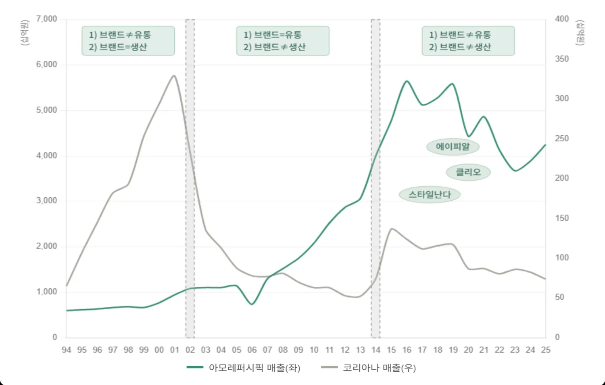
3.2 저가형 원브랜드숍의 등장
2000년대 초는 한국 화장품 산업의 흐름이 근본적으로 바뀐 시기였다. 2002년 국내 신용카드 규제 완화와 과잉 소비로 인해 신용불량자가 양산된 ‘카드 대란 사태’ 이후 소비가 급격히 위축되면서 내수가 크게 흔들렸고, 수출 비중이 높은 한국 경제 구조상 드물게 내수 부진이 경기 전반에 직접적인 충격을 준 시기였다. 이 여파로 ‘화장품나라’와 같은 전통적인 화장품 가두점들은 심각한 불황을 겪었다. 당시 가두점은 개인사업자 형태의 가맹점이 중간 도매상을 통해 아모레퍼시픽, LG생활건강, 코리아나, 한국화장품 등 여러 브랜드의 제품을 공급받아 판매하는 멀티브랜드숍이 주류였다. 경기 침체와 소비 위축은 이런 유통 구조의 취약성을 그대로 드러냈다.
가두점 채널이 흔들리면서 새로운 형태의 로드숍 모델이 등장했다. 대표적인 사례가 저가형 원브랜드숍 ‘미샤’와 아모레퍼시픽의 화장품 전문점 ‘휴플레이스(현 아리따움)’다. 변화의 신호탄은 미샤가 먼저 쏘아 올렸다. 미샤는 2002년 이대 1호점 오픈 이후 불황 국면을 기회로 삼아 빠르게 성장했다. 광고비와 포장비 등 불필요한 비용을 최소화하는 구조적 혁신을 통해 업계 최저가 전략을 구현했고, 3300원~9800원의 초저가 제품으로 틈새시장을 공략했다. 그 결과 2004년 기준 매장 수 240개, 연 매출 1200억 원(리테일 기준)을 기록했다. 이후 더페이스샵 역시 2003년 12월 명동 1호점 개설 후 불과 1년 만에 매장 수 220개, 매출 1000억 원 규모로 성장했다.
원브랜드숍의 확산과 경기 침체로 가두점 채널이 급격히 약화되자, 아모레퍼시픽은 기존 전략을 수정해 자체 유통망 구축으로 방향을 틀었다. 2004년 7월 봉천점 1호점을 시작으로 화장품 전문점 ‘휴플레이스’를 출범시켰고, 개점 4개월 만에 300호점을 돌파했다. 휴플레이스는 원브랜드숍과 유사한 깔끔하고 세련된 매장 이미지에 아모레퍼시픽 브랜드만을 취급하는 차별화 전략을 결합했다. 초기에는 아모레퍼시픽 제품 비중이 약 50%였으나, 점차 자사 브랜드 중심으로 전환해 나갔다. 아모레퍼시픽의 휴플레이스는 2008년 100% 자사 브랜드만을 취급하는 ‘아리따움’으로 전환됐고, 2015년에는 최대 1350개 매장에서 매출 4550억 원을 기록하며 아모레퍼시픽 전체 매출의 약 10%를 차지했다.
3.3 한국 화장품 산업의 구조적 전환
이런 시장 변화는 한국 화장품 산업 전반에 두 가지 구조적 전환을 가져왔다. 첫째, 2000년대 초 이후 본격화된 브랜드와 생산의 분리다. 과거에는 브랜드 기업이 직접 생산까지 담당했지만, 이후 코스맥스와 한국콜마 같은 전문 ODM 기업에 생산을 위탁하는 구조가 일반화됐다. 이로 인해 브랜드 기업은 제조 설비를 보유할 필요가 없어졌고 자본과 아이디어, 네트워크만 있으면 누구나 시장에 진입할 수 있는 환경이 조성됐다. 진입 장벽이 낮아진 만큼 경쟁은 더욱 치열해졌고, 브랜드 기업과 ODM 기업들은 끊임없이 새로운 콘셉트와 제품을 시장에 쏟아냈다. 그 결과 한국은 전 세계에서 제품 회전율이 가장 빠르고 신제품 출시가 가장 활발한 시장으로 자리 잡았으며, 명동은 글로벌 화장품 트렌드의 상징적 거점으로 부상했다.
원브랜드숍 시장의 고속 성장과 경쟁 심화는 ODM 기업 성장의 핵심 동력이었다. 신제품 개발 기간은 기존 2년에서 약 6개월로 단축됐고, 주요 제품은 매년 리뉴얼되는 것이 표준이 됐다. 이 과정에서 ODM 기업들은 수천 개의 상품 카테고리와 데이터, 수백 개의 히트 제품 포트폴리오를 축적하며 글로벌 최고 수준의 기술력을 확보했다. K뷰티가 ‘가성비’와 ‘혁신성’을 동시에 갖춘 산업으로 평가받는 배경도 여기에 있다. 축적된 R&D 역량을 바탕으로 코스맥스와 한국콜마의 ODM 시장 점유율은 빠르게 확대됐고, 이는 중국 등 해외 ODM 시장 진출의 발판으로 작용했다.
두 번째 구조적 변화는 브랜드와 유통의 통합이다. 2003년 이전에는 브랜드와 유통이 분리돼 있었으나, 이후에는 오프라인 점포를 직접 보유하지 않으면 브랜드 확장이 어려운 구조로 바뀌었다. 이에 따라 업체 간 격차가 빠르게 벌어졌다. 2002년 이전까지는 아모레퍼시픽, 한국화장품, 코리아나 등 중견 화장품 기업들이 비교적 고르게 성장했지만, 이후 아모레퍼시픽과 LG생활건강이 가두점 및 원브랜드숍 채널을 장악하면서 시장은 과점 구조로 재편됐다. 한국화장품과 코리아나는 방판과 전문점 채널에서 경쟁력을 유지해왔으나, 원브랜드숍 중심의 유통 구조로 전환되면서 주요 판매 채널을 상실했고 실적도 급격히 위축됐다. 실제로 아모레퍼시픽 매출은 2002년 6800억 원에서 2014년 3조 9000억 원으로 5.7배 성장한 반면, 코리아나는 같은 기간 매출이 3500억 원에서 1000억 원 수준으로 감소했다.
결과적으로 한국 화장품 시장의 성장은 아모레퍼시픽과 LG생활건강 등 대형 기업과 원브랜드숍 중심으로 집중됐다. 메이저 브랜드들의 유통업 진출은 중저가 시장 점유율 확대를 이끌었고, 시간이 지나면서 신규 브랜드나 해외 중저가 브랜드의 진입을 어렵게 만드는 장벽으로 작용했다.
3.4 H&B 스토어가 연 ‘언더독의 시대’
원브랜드 로드숍의 성공 공식에 균열을 내기 시작한 건 H&B스토어의 등장이었다. 국내 대표 H&B스토어인 올리브영은 2010년대 초반 점포를 연간 50개씩 새로 열면서 투자를 확대했다. 다양한 뷰티 브랜드가 입점한 H&B스토어는 한정된 브랜드들이 리뉴얼만 반복하는 원브랜드숍 시장에 권태를 느낀 소비자들의 니즈를 충족시키기에 충분했다. 올리브영 같은 H&B스토어는 클리오, 메디힐 등 국내 중소 브랜드와 키스미, 메이블린과 같은 수입 브랜드 등 신선한 브랜드와 다양한 제품을 제공하며 소비자들의 갈증을 해소시켰다.
이런 H&B스토어의 성장은 뷰티 시장에서 ‘언더독의 시대’를 여는 기폭제가 됐다. H&B스토어가 신규 중소 뷰티 브랜드들의 유통 채널이 되고, 자체 공장 없이도 코스맥스, 한국콜마 등 ODM을 통해 고품질 화장품 생산이 가능해지면서, 자본과 매장 네트워크가 부족한 신생 브랜드들이 시장에 뛰어들 수 있는 기반이 마련됐다. 기획력과 감각이 뛰어난 중소 브랜드들이 빠르게 소비자 접점을 확보하며 기존 강자들을 위협하기 시작한 것이다.
Ⅳ. 사례 분석
4.1 에이피알의 초기 성공과 캐즘 직면
4.1.1 디지털 네이티브 D2C 브랜드의 탄생
국내 화장품 시장이 신생 브랜드의 대거 유입으로 지형이 빠르게 재편되는 가운데, 에이피알은 기존의 성공 공식과는 전혀 다른 방식으로 시장의 문을 두드렸다. 당시 대부분의 중소 브랜드들이 올리브영 등 H&B스토어 입점을 목표로 할 때 에이피알은 처음부터 자사몰 중심의 D2C(Direct-to-Consumer) 모델을 구축했다. 에이피알이 이런 비전형적인 전략을 택한 데는 김병훈 창업자의 독특한 경력 배경이 영향을 줬다.
1988년생 연세대 경영학과 출신인 김병훈 대표는 대학 시절부터 창업을 꿈꾸며 여러 차례 도전에 나선 전형적인 ‘언더독 창업가’였다. 그는 교환학생으로 미국에 머무르던 시기에 처음 본격적으로 사업 아이디어를 탐색했고 알람 앱, 커플 앱, 소셜 데이팅 앱 등 4년간 다양한 서비스를 개발했다. 하지만 초기 아이템들은 시장에서 의미 있는 성과를 내지 못했고 대부분 실패로 돌아갔다. 이 과정을 통해 그가 깨달은 건 “블루오션이 데드오션일 가능성이 크다”는 것이었다. 소비자가 필요로 하지 않는 서비스는 아무리 기발해도 살아남기 어려웠고, 블루오션처럼 보이는 시장일수록 실제로는 니즈가 존재하지 않기 때문에 비어 있는 경우가 많았다.1
여러 번의 시도와 실패 끝에 마지막으로 선택한 길은 온라인 광고 에이전시였다. 그는 소셜 미디어 등 디지털 마케팅 플랫폼이 막 성장하던 시기에 일찌감치 뛰어들어 뷰티, 패션 등 여러 브랜드의 광고를 집행하며 빠르게 성장했다. 광고 성과는 늘 좋았다. 실제로 대부분의 고객사는 첫 달 매출이 급증하는 경험을 했다. 그러나 문제는 그다음이었다. 두 번째 달부터 매출이 급격히 떨어지는 패턴이 반복된 것이다. 소비자가 광고를 보고 제품을 구매하지만, 정작 제품의 품질과 효능이 기대에 미치지 못해 재구매로까지 이어지진 못했다. 이 경험은 그가 직접 화장품 판매업에 뛰어드는 계기가 됐다.2 광고로 주목을 끌 수 있지만 좋은 제품 없이는 지속가능한 성장을 할 수 없다는 사실을 절감했기 때문이다. 그렇게 2014년 10월, 그는 첫 화장품 브랜드 ‘에이프릴스킨(APRILSKIN)’을 론칭했다.
처음으로 출시한 제품은 커버력이 강한 ‘매직스노우쿠션’이었다. 에이피알은 처음부터 매장이나 타 유통 채널 기반이 아닌 자사몰 중심의 D2C 모델을 구축하고, SNS를 중심으로 한 디지털 소비 시대가 본격적으로 열릴 것이란 확신 아래 비디오 커머스형 마케팅에 주력했다. 신 부사장은 “모든 사람들의 눈과 귀가 모바일로 향할 것이란 디지털 전환 흐름을 읽고 발빠르게 움직였다”고 말했다. 매직스노우쿠션은 SNS에서 10∼20대에 영향력이 큰 인플루언서들이 직접 모델이 돼 제품을 사용하고, 직접 효과를 보여주는 영상이 바이럴되면서 소비자들의 입소문을 탔다. 소비자가 단순히 제품 외형을 보는 것이 아닌, 피부에 바르고 변화가 생기는 장면을 SNS 영상으로 생생하게 확인하면서 “나도 써보고 싶다”는 욕구를 강하게 느꼈고, 영상에 첨부된 링크를 타고 들어가 자사몰 구매 전환으로 이어졌다. 에이프릴스킨은 창업 첫 해 매출 2억 원에서 이듬해 125억 원으로 성장했고 매출의 90%가 자사몰에서 발생했다.
4.1.2 카피캣 위기를 혁신의 기회로
에이프릴스킨의 성공을 발판 삼아 2016년 7월에는 두 번째 뷰티 브랜드 메디큐브(Medicube)를 론칭했다. 더마 코스메틱 브랜드인 메디큐브는 처음부터 기능성 스킨케어 시장을 공략했다. 피부 문제 고민 해결을 위해 큐브를 풀듯 계속 노력한다는 의미가 담긴 사명에 걸맞게 소비자가 피부 변화의 효과를 실제로 체감할 수 있는 제품을 만드는 것이 브랜드의 핵심 전략이었다. 그 전략이 결정적으로 구현된 제품이 바로 ‘제로모공패드’였다. 제로모공패드는 패드에 토너가 미리 적셔진 형태의 올인원 스킨케어 제품이다. 둥근 패드로 얼굴을 닦아 피부결을 정돈하거나 피부에 올려 팩처럼 사용할 수 있는, 당시 시장에 없던 새로운 형태의 스킨케어 제품이었다. 패드 형태의 편의성은 유지하되, 피지와 모공 속 잔여물을 깨끗하게 닦아내고 ‘스팟 팩’ 역할까지 할 수 있도록 설계한 것이다.
에이피알은 2017년 메디큐브의 제로모공패드를 아마존에 처음 선보이며 해외 진출의 첫 시동을 걸었다. 신 부사장은 “에이피알은 K뷰티의 수출 가능성을 엿보고 초기부터 글로벌 시장을 전제로 시작한 사업”이라며 “단순히 규모가 큰 해외 시장이 아닌, 한국처럼 온라인 이커머스 생태계가 제대로 갖춰져 있는 곳이어야 한다는 기준을 세웠다”고 말했다. 결제 시스템, 배송 인프라, 플랫폼의 신뢰도 등이 뒷받침되지 않으면 에이피알이 가진 온라인 기반 D2C 모델의 경쟁력이 제대로 작동하지 않을 것이라고 판단했다. 실제로 당시 베트남 등 일부 개발도상국에서는 가짜 플랫폼, 결제 오류, 배송 사고 등이 빈번해 온라인 전환이 쉽지 않았다. 이에 에이피알은 2018년 미국, 일본, 중국, 홍콩, 싱가포르, 대만 등 이미 안정적 마켓플레이스와 이커머스 인프라가 구축돼 있는 6개국에 해외 법인을 일찌감치 설립해 글로벌 시장 기반을 다졌다.
제로모공패드를 출시한 이듬해인 2018년 에이피알의 해외 매출이 103억 원을 기록하고, 2019년 384억 원으로 뛰는 등 성장에 가속도가 붙었다. 그러나 에이피알은 곧 예상치 못한 역풍을 맞았다. 제로모공패드가 시장에서 폭발적 반응을 일으키자 유사 제품들이 우후죽순 쏟아진 것이다. 특히 에이피알은 자사몰 중심의 D2C 채널에 주력했는데, 이 틈을 파고들어 일부 H&B 스토어들이 다른 브랜드에 메디큐브와 비슷한 제품을 더 저렴한 가격으로 만들어보라고 요청하며 제로모공패드와 유사한 카피캣 제품들이 유통되기 시작했다.
제로모공패드가 히트 상품이 되자, 제조 역량이 높은 OEM, ODM 공장들이 순식간에 유사 제품을 생산해 H&B스토어 매대에 진열되기 시작했다. 제로모공패드가 인기를 끌수록 오히려 가격이 더 낮은 모방 제품들이 더 넓은 매대를 차지하는 역설적인 상황이 벌어지기도 했다. 이 같은 카피캣의 범람은 에이피알에 뼈아픈 교훈을 남겼다. 국내 화장품 산업의 구조상 단순히 패키징, 성분, 제형 혁신만으로는 지속가능한 우위를 만들기 어렵다는 것이었다. 아무리 신제품에 대한 특허를 보유하고 있어도 타사가 형태, 제형, 성분을 조금만 변형해 출시해도 특허를 회피할 수 있었기 때문이다. 또한 에이피알 역시 제조를 OEM사에 위탁하고 있는 만큼, 화장품 제조와 판매가 분리된 OEM, ODM 중심의 생태계에서는 기술, 레시피의 귀속이 모호하다는 문제도 있었다. 신 부사장은 “타사가 모방하기 어려운 영역으로 이동해 비가역적 혁신을 이뤄내야 했다”며 “이때부터 에이피알 내부에서는 ‘경쟁사가 쉽게 진입하지 못하는 카테고리는 무엇인가?’라는 전략적 질문이 본격화되기 시작했다”고 말했다.
그림 7. 에이피알 주요 사업 포트폴리오
(출처: 필자)
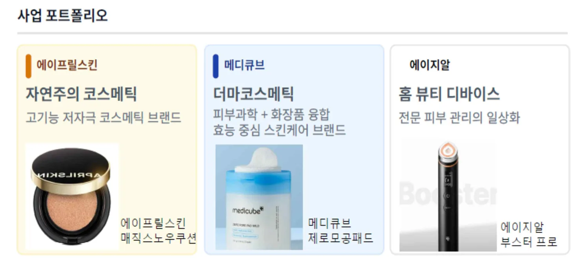
4.2 에이피알의 파괴적 혁신
4.2.1 피부과 시술의 틈새 겨냥
눈에 들어온 건 뷰티 디바이스였다. 당시 글로벌 화장품 시장의 연평균 성장률(CAGR)은 3~4% 수준에 머물렀고, 물가 상승률을 제외하면 실질 성장은 2% 남짓에 불과했다. 이미 포화 단계에 이른 화장품 시장에서 가격과 마케팅 경쟁만으로는 더 이상 의미 있는 확대를 기대하기 어려웠다. 반면 같은 기간 홈 뷰티 디바이스와 의료기기 시장은 연 10~25%씩 성장하며 가파른 상승 곡선을 그리고 있었다. 게다가 국내에서는 울쎄라, 슈링크, 써마지 등 피부 미용 목적의 의료기기 시장이 확대되며 피부과 시술 시장 역시 급성장하고 있었다. 점 제거, 토닝 수준에 머물던 기존 시술을 넘어 리프팅, 타이트닝 등 본격적인 안티에이징 시술이 대중화됐다. 이런 변화는 소비자 지출의 흐름까지 뒤바꿨다. 과거에는 비싼 화장품을 더 두껍게 바르는 것이 안티에이징 방법이었다면, 피부과 시술을 받는 것이 소비자 사이에서 새로운 루틴으로 자리 잡기 시작했다.
그러나 피부과 시술은 여전히 구조적 제약이 큰 상황이었다. 한국과 비교했을 때 대부분의 해외 국가에서 피부과 시술은 고가의 비용이 든다. 가령 고주파 리프팅 시술인 써마지의 경우 한국에서는 90만~200만 원인 데 반해, 미국에서는 360만~730만 원($2500~$5000) 수준이다.3 미국의 경우 피부과 방문을 위해 차로 4~8시간 이동해야 하는 지역도 있는 등 접근성도 떨어지며 의료진의 숙련도 역시 큰 격차를 보인다. 반면 한국은 세계에서 가장 빠른 속도로 미용 의료 기술을 도입하고 장비를 지속적으로 업그레이드하는 뷰티 선진국이었다. 치열한 경쟁 속에서 한국의 피부과 시술 품질은 세계적 수준으로 고도화돼 외국인 의료관광 수요는 꾸준히 증가하고 있었다. 에이피알은 이런 변화 속에서 뚜렷한 기회를 봤다. ‘피부과에서만 받을 수 있던 시술을 집 안에서 안전하게 구현할 수 있다면 시장은 완전히 새로 열린다.’
에이피알은 2021년 3월 홈 뷰티 디바이스 전문 브랜드 ‘메디큐브 에이지알(AGE-R)’을 론칭하며 경락 마사지 기능을 담은 ‘더마 EMS샷’을 출시했다. 이어 2022년에는 리프팅 시술 기능의 ‘유쎄라 딥샷’, 레이저 및 프락셀4 시술 기능을 제공하는 ‘ATS 에어샷’, 피부 광채 케어 전용 ‘부스터 힐러’를 출시했다. 에이피알이 출시한 홈 뷰티 디바이스 에이지알은 집에서 세안 후 스킨케어 제품을 바르고 사용자가 기기를 얼굴 라인을 따라 천천히 쓸어 올리기만 하면 되는 편의성이 강점이었다. 피부과에 방문하지 않아도 상대적으로 저렴한 가격에 효과적으로 피부 관리를 할 수 있는 에이지알은 점점 소비자들의 입소문을 타며 출시 첫 해 5만여 대에 그쳤던 연간 기기 판매량이 이듬해인 2022년 약 60만대로 증가했다.
에이지알의 초기 성공은 단순한 신제품 히트를 넘어, 에이피알이 기존의 고가·고품질 중심 피부과 시술 시장의 ‘하단부(Low-end)’를 공략해 ‘파괴적 혁신’ 경로에 진입하고 있음을 보여주는 신호탄이었다. 파괴적 혁신(Disruptive Innovation) 개념을 주창한 Christensen에 따르면 파괴적 혁신자는 기존 제품 대비 저렴하고 단순한 대안으로 기존 시장의 하단부(low-end)를 공략하거나, 기존 제품이나 서비스가 너무 비싸거나 접근성이 낮아 소비 자체가 불가능했던 비소비(non-consumption) 집단을 새로운 시장으로 끌어들인다. 에이피알은 시간을 내 피부과를 예약, 방문해야 하는 번거로움, 통증에 대한 두려움이나 시술 과정에 대한 부담, 지리적 제약 등으로 인해 관심은 있지만 시도하지 못하고 있는 비소비 집단을 에이지알 기기를 통해 홈 뷰티라는 새로운 시장으로 끌어들였다. 집에서 원하는 시간에, 짧게는 5분에서 10분만 투자해 반복적으로 안전하게 사용할 수 있는 대안을 제시함으로써 기존 시장 밖에 머물러 있던 비소비자층을 흡수한 것이다.
물론 집에서 사용하는 기기 특성상 출력을 피부과 수준으로 올리는 것이 위험하기에 에이지알 기기가 의료 시술을 완전히 대체할 수준은 아니다. 그러나 에이지알은 기존 피부과 시술 시장에서 시술 효과는 원하지만 비용이나 접근성 면에서 부담을 크게 느끼는 소비자층, 즉 로우엔드(low-end) 사용자를 공략해 20만~30만 원대의 상대적으로 저렴한 가격의 기기로 피부과 시술과 스킨케어 사이의 적절한 효능을 제공하며 합리적인 대안을 제시했다. 즉 피부과 시술이라는 고가 시장의 틈새에서 출발해 Christensen이 말한 파괴적 혁신자의 전형적 특성인 ‘충분한 성능(Good enough)’과 저렴한 가격, 높은 접근성으로 시장 지형을 바꾸기 시작한 것이다.
표 2. 에이피알의 파괴적 혁신 요소
(출처: 필자)
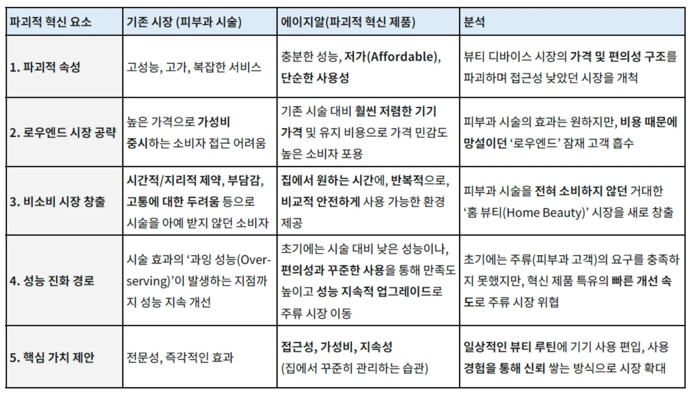
한편 이런 에이피알의 부상을 기존 시장 강자는 어떻게 바라보고 있을까. 2025년 9월 진행한 취재에서 아모레퍼시픽 관계자는 아모레퍼시픽의 시가총액을 뛰어넘은 에이피알의 주가 상승에 대해 "에이피알과는 근본적으로 전략 방향이 다르기 때문에 직접적인 위협으로 인식하고 있지 않다"고 밝혔다. 아모레퍼시픽은 에스트라 등 더마 뷰티 라인업을 강화하는 동시에 이니스프리, 헤라, 라네즈, 설화수 등 기존 브랜드 포트폴리오의 다각화 전략을 취하고 있기 때문에 더마 코스메틱 브랜드 메디큐브를 중심으로 사업을 전개하고 있는 에이피알을 자사의 경쟁 영역으로 보고 있지 않다는 것이다.
이는 Christensen이 지적한 혁신자의 딜레마와 맞닿아 있다. 기존 강자는 현재 가장 수익성 높은 고가 고객에 자원을 집중하는 것이 합리적이기 때문에 시장 하단부에서 다른 가치 네트워크를 구축하며 성장하는 파괴적 혁신자를 경쟁 대상으로 인식하지 못한다. 실제로 아모레퍼시픽의 2025년 국내 매출 구성을 보면 고가 프리미엄 라인인 설화수가 29%로 가장 큰 비중을 차지하고 헤라(15%), 에스트라(9%)가 뒤를 잇는다. 아모레퍼시픽은 수익의 핵심이 고가 브랜드에 집중돼 있는 만큼, D2C 자사몰 중심으로 합리적 가격대의 더마 코스메틱 브랜드 메디큐브와 뷰티 디바이스 에이지알을 중심으로 사업을 전개하는 에이피알과 근본적으로 경쟁 영역이 다르다고 인식하고 있음을 알 수 있다. 아모레퍼시픽이라는 기존 강자가 위협을 인식하지 못한다는 사실은 에이피알이 파괴적 혁신 궤적을 따르고 있음을 보여주는 방증이다.
그림 8. 에이피알의 전 밸류체인 내재화 모델
(출처: 필자)
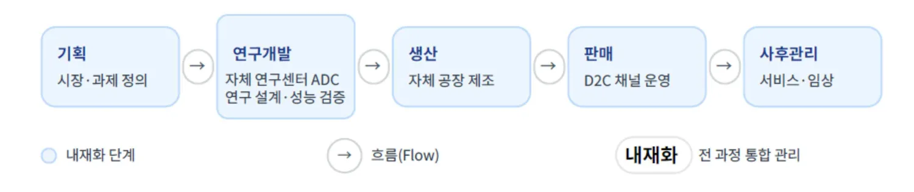
4.2.2 전 밸류체인 내재화로 경쟁력 강화
파괴적 혁신자는 시장 하단부에 머물지 않는다. Christensen에 따르면 진정한 파괴(disruption)는 기술과 성능을 지속적으로 개선하며 기존 주류 시장의 ‘성능 기대치’를 따라잡을 때 완성된다. 에이피알 역시 1세대 제품이 가진 ‘충분한 성능’ 수준을 넘어 2세대 에이지알부터는 기술과 성능을 본격적으로 개선하고 있다. 에이피알은 기존의 에이지알 1세대 제품을 OEM 방식으로 제조했다. 홈 뷰티 디바이스 관련 경험이 많은 OEM사가 없었던 탓에 전자체온계, 전자담배 업체들과 함께 만들었다. 그런데 시간이 지나면서 에이피알이 요구하는 기술 수준을 OEM이 따라오지 못하기 시작했고, 관련 기술 및 IP 귀속 문제도 생겼다. 결국 디바이스의 핵심 기술을 내재화하지 않으면 장기적인 경쟁우위를 가지기 어렵다고 판단했다.
에이피알은 에이지알 2세대부터 R&D–설계–제조–임상–사후 관리까지 전체 밸류체인을 내재화하는 전략적 전환을 단행했다. 2023년 7월 뷰티 디바이스 생산 시설 ‘에이피알팩토리 제1공장’을 준공한 후 첫 자체 생산 뷰티 디바이스인 ‘부스터 프로’를 출시했다. 이는 단순한 생산 방식의 변화를 넘어 기기 성능을 끌어올릴 수 있는 엔진을 회사 내부에 구축한 셈이었다. 부스터 프로는 기존 1세대 제품이 제공하던 기능을 기기 하나에 올인원으로 모두 담았다. 토닝 광채 케어 기능의 ‘부스터 모드’, 콜라겐 생성을 촉진해 주름 라인에 볼륨을 더하는 ‘미세전류 모드’, 얼굴 근육을 자극해 윤곽을 관리하는 ‘더마샷 모드’, 모공 탄력을 관리하는 ‘에어샷 모드’ 등 네 가지 모드를 탑재했다.
그림 9. 에이지알의 세대별 진화
(출처: 필자)
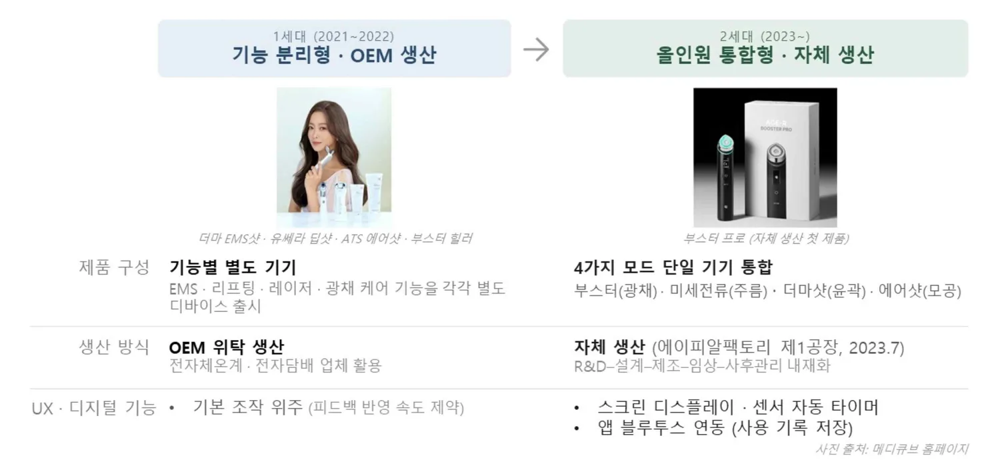
또한 1세대 제품에서 축적된 소비자 피드백도 신제품에 적극 반영됐다. 기존의 OEM 구조에서는 에이피알이 원하는 기능 개선을 빠르게 적용하기가 어려웠다면, 밸류체인을 내재화한 후에는 소비자의 개선 요구가 제품에 즉각 반영됐다. 예컨대 “기기에 스크린이 있으면 좋겠다” “기기를 블루투스로 연결할 수 있게 해달라” 등 1세대 제품 사용자들의 피드백을 모아 자체 생산한 2세대 제품에 반영했다. 예컨대 부스터 프로를 비롯한 에이지알 2세대 제품에는 사용 중인 모드와 시간을 확인할 수 있는 스크린, 소비자가 기기를 얼굴에서 떼면 자동으로 시간이 멈추고 다시 사용하면 카운트가 재개되는 센서 기반 타이머가 탑재돼 있다. 또한 에이지알 앱과 기기를 블루투스로 연동해 사용 기록을 자동 저장함으로써 사용자가 뷰티 루틴을 편리하게 관리할 수 있도록 했다.
또한 에이피알은 자체 연구개발(R&D) 센터인 ADC(APR Device Center)를 통해 원천 기술을 내재화하고 있다. 기존 뷰티 디바이스 시장에서 보편적으로 사용되는 기술은 약한 전류의 음(-)극과 양(+)극으로 화장품 성분을 이온화해 피부에 침투시키는 ‘갈바닉(Galvanic)’ 방식이다. 갈바닉 방식은 비타민 C처럼 분자량이 상대적으로 작은 성분만 해리할 수 있어 침투력과 적용 범위에서 한계를 가진다. 반면 ADC는 피부 인지질층에 자극을 주고, 인지질층이 벌어진 틈 사이로 영양분을 넣는 기술을 개발해 더 뛰어난 침투력을 확보했다. 현재 ADC 소속 석·박사급 인력 30~40명이 기존 뷰티 디바이스 개선, 신규 디바이스 개발, 관련 특허 출원까지 총괄하고 있다. 2025년 12월 31일 기준 에이피알은 국내 133개, 해외 219개의 특허를 출원 및 등록했다.
나아가 에이피알은 뷰티 디바이스의 효능도 연구를 통해 과학적으로 입증하고 있다. 에이피알 기업부설연구소인 글로벌피부과학연구원은 ‘부스터 프로’ 관련 인체 적용 시험을 직접 설계·수행하고, 그 결과를 논문으로 작성해 국내 학술지인 『한국미용학회지』에 등재했다. 글로벌피부과학연구원이 만 20~60세의 한국 여성 42인을 대상으로 수행한 연구에 따르면 모든 참여자가 약 2주간 글루타티온 앰플과 부스터 프로의 미세전류(MC) 기능(2주) 및 중주파(EMS) 기능(4주)을 사용한 결과, 눈가 주름 및 피부 볼륨과 진피치밀도에 있어 유의미한 개선이 확인됐다. 만 20~60세의 한국 여성 44명을 대상으로 한 또 다른 연구에서도 약 2주간 부스터 프로를 사용한 결과, 유의미한 수준의 피부 탄력과 리프팅 효과가 나타났다. 신 부사장은 “의공학대학과의 협력 연구도 확대하고 있다”며 “내부 R&D와 외부 연구 인프라를 결합해 기술 개발을 고도화하고, 확보한 IP를 통해 장기적 경쟁우위를 강화해나갈 계획”이라고 밝혔다.
그림 10. 에이지알의 리프팅 효과에 관한 임상 결과
출처: 미세전류, 중주파 기능이 탑재된 가정용 미용기기가 안면 피부 탄력 및 리프팅에 미치는
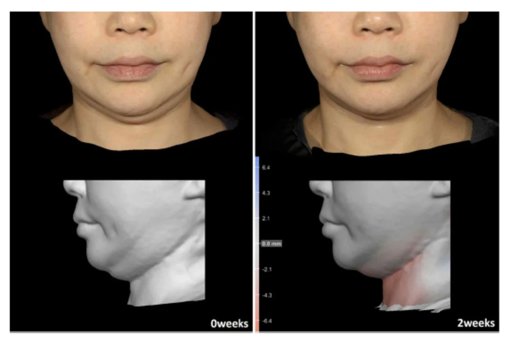
그림 11. 에이피알과 아모레퍼시픽의 IPC 특허 분류 비교
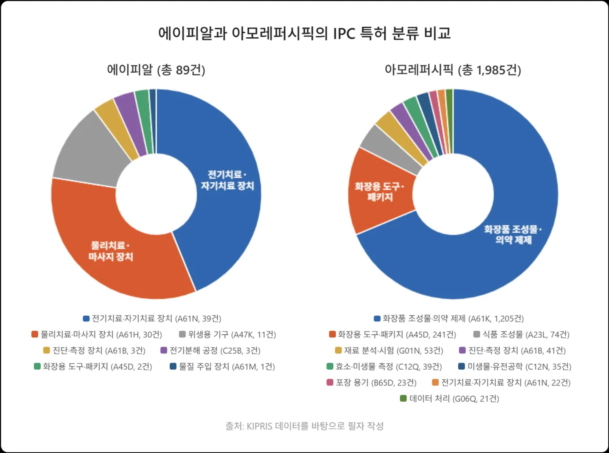
4.2.3 에이피알과 아모레퍼시픽의 특허 비교 분석
에이피알이 구축하고 있는 기술적 해자의 성격을 보다 명확히 이해하기 위해 에이피알과 아모레퍼시픽의 특허 포트폴리오를 국제특허분류(IPC) 기준으로 비교 분석했다. 두 기업의 특허 포트폴리오는 양적 규모뿐만 아니라 기술 개발의 방향성에서 근본적인 차이를 보인다.
우선 양적 측면에서 아모레퍼시픽은 2005년부터 약 20년간 총 1,985건의 국내 특허를 출원·등록하며 방대한 IP 자산을 축적해왔다. 반면 에이피알은 2021년부터 본격적으로 특허 출원을 시작해 약 5년 만에 국내 89건의 특허를 확보했다. 절대적인 특허 출원 규모에서는 아모레퍼시픽이 압도적인 반면, 에이피알은 밸류체인 내재화를 시작한 2021년 이후 집중적으로 IP를 구축하고 있다.
더 중요한 차이는 질적 측면, 즉 특허가 집중된 기술 영역에서 나타난다. 아모레퍼시픽의 IPC 상위 분류를 보면 A61K(화장품 조성물·의약 제제)가 1,205건으로 전체의 약 61%를 차지하고, A45D(화장용 도구·패키지)가 241건으로 뒤를 잇는다. 이는 화장품의 성분 개선과 패키지 혁신에 R&D 역량이 집중된 전형적인 화장품 기업의 특허 구조다.
반면 에이피알의 특허 구조는 이와 확연히 다르다. IPC 상위 분류에서 A61N(전기치료·자기치료 장치)이 39건으로 가장 많고, A61H(물리치료·마사지 장치)가 30건, A47K(위생용 가구·기기)가 11건으로 뒤를 잇는다. 에이피알의 특허 포트폴리오가 화장품이 아닌 뷰티 디바이스 기술, 더 정확히 말하면 전기자극·물리치료 기반의 피부 관리 기기 기술에 집중돼 있음을 보여준다.
이 특허 구조의 차이는 두 기업이 서로 다른 가치 네트워크에서 경쟁하고 있음을 입증한다. 아모레퍼시픽이 ‘더 좋은 성분, 더 나은 패키지’라는 존속적 혁신의 축 위에서 IP를 쌓아가고 있다면, 에이피알은 ‘뷰티 디바이스 기술을 통한 피부 관리’라는 파괴적 혁신의 축 위에서 완전히 다른 방향의 기술적 해자를 구축하고 있는 것이다. 앞서 아모레퍼시픽 관계자가 에이피알을 "전략 방향이 다른 기업"으로 인식하고 있음을 확인했는데, 특허 포트폴리오 분석은 이런 인식이 사실이며 두 기업의 기술 투자 방향이 실제로 다르다는 사실을 데이터를 통해 뒷받침한다. 동시에 Christensen이 말한 파괴적 혁신의 전형적 패턴, 즉 기존 강자와 전혀 다른 가치 네트워크에서 성장하기 때문에 기존 강자의 레이더에 잡히지 않는 구조를 특허 분석을 통해 확인할 수 있었다.
그림 12. 에이피알과 아모레퍼시픽의 특허 키워드 분석
(출처: 위즈도메인)
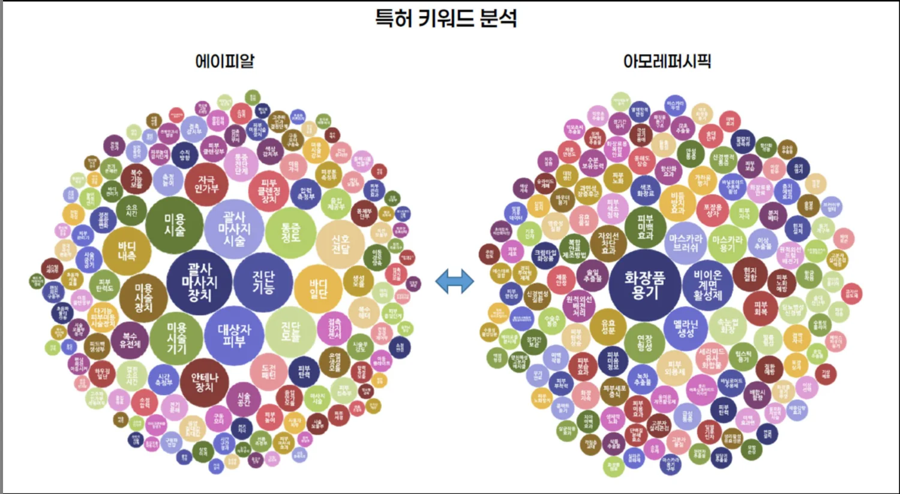
4.2.4 Whole Product 전략: 제품 넘어 ‘시스템’ 판매
에이피알의 성장 전략을 종합하면, 이 회사는 단일 하드웨어 제품을 판매하는 데 그치지 않고 ‘Whole Product(전체 제품)’ 전략을 통해 하나의 완결된 시스템을 시장에 제공하고 있다. 이는 Moore가 제시한 ‘캐즘(Crossing the Chasm)’ 이론에서 강조하는 핵심 성공 요인과도 맞닿아 있다. 즉, 기술 애호가와 초기 수용자(Early Adopters)를 넘어 실용주의적 다수 대중(Early Majority) 시장으로 확장하기 위해서는 핵심 기술 자체만으로는 부족하며, 고객이 실제로 문제를 해결하고 사용 실패를 겪지 않도록 돕는 보완적 요소들이 필수적이라는 것이다.
에이피알의 핵심 제품(Core Product)은 에이지알 뷰티 디바이스 자체다. EMS, 부스팅, 리프팅 등 기술적 차별성을 통해 신기술에 민감한 초기 수용자(Early Adopters)에게 분명한 혁신 가치를 제시하며 시장 진입에 성공했다. 특히 에이지알은 90만~200만 원대의 고가 피부과 시술 시장 하단부를 20만~30만 원대의 합리적 가격으로 공략하고, 집에서 5~10분만 투자해 사용할 수 있는 편의성을 제공함으로써 비용·통증·시간 부담으로 시술을 받지 못하던 비소비층을 흡수했다.
또한 기대 제품(Expected Product) 단계에서 에이피알은 대중 시장이 홈 뷰티 디바이스에 당연히 요구하는 최소한의 기능과 품질, 즉 검증된 효능, 기기 신뢰성, 임상적 근거를 충족시켰다. 에이지알 2세대 제품부터 자체 R&D센터 ADC와 에이피알팩토리 제1공장을 구축해 핵심 기술을 내재화하고, 기업부설연구소 글로벌피부과학연구원이 부스터 프로 관련 인체 적용 시험을 직접 설계·수행해 눈가 주름·진피 치밀도·피부 탄력·리프팅 효과에서 유의미한 개선을 확인한 후 그 결과를 한국미용학회지에 등재하는 등 효능을 과학적으로 입증했다. 이는 실용주의 소비자들이 '효과가 검증되지 않은 신기술 기기'에 대해 갖는 구매 망설임을 해소하는 데 기여했다.
나아가 에이피알은 보완 제품(Augmented Product)으로서 2세대 제품부터는 에이지알 앱과 기기를 블루투스로 연동해 사용 이력을 자동 저장하고 사용자가 뷰티 루틴을 편리하게 관리할 수 있도록 했다. 기기에는 사용 중인 모드와 시간을 확인할 수 있는 스크린, 얼굴에서 떼면 자동으로 시간이 멈추고 다시 사용하면 카운트가 재개되는 센서 기반 타이머가 탑재됐다. 여기에 누구나 쉽게 따라 할 수 있는 데일리 루틴 가이드와 단계별 튜토리얼·사용 매뉴얼을 더함으로써 '어렵고 실패하기 쉬운 기기'라는 홈 뷰티 디바이스의 고질적인 진입 장벽을 크게 낮췄다. 또한 앱 내 1:1 전문가 케어 채널을 통해 사용자가 기기 사용 중 마주치는 개별 고민을 즉시 해소할 수 있도록 했고, 시술&고민톡 게시판과 기기 사용 전후 변화를 공유하는 B&A(Before&After) 후기 등 지속적인 사용 동기를 부여하는 보완 요소로서 커뮤니티를 운영했다.
마지막으로 에이피알은 2021년 더마EMS샷을 시작으로 ATS에어샷·유쎄라딥샷·부스터힐러·아이샷·바디샷·부스터프로·울트라튠·하이포커스샷·부스터프로 미니에 이르기까지 약 5년간 10여 종의 디바이스를 주기적으로 연속 출시하며 제품 라인업을 확장해왔다. 이는 단발성 히트 제품이 아닌 주기적 업그레이드와 제품 확장을 통해 사용자에게 장기적 기대를 제시하는 잠재적 제품(Potential Product)의 실현이다.
종합하면, 에이피알 사례는 파괴적 혁신 기업이 단순히 ‘기술적으로 새로운 제품’을 출시하는 데서 그쳐서는 안 되며, 고객 경험 전반을 포괄하는 시스템 차원의 설계와 실행이 필요하다는 점을 시사한다. 에이피알은 제품·콘텐츠·소프트웨어·브랜드를 유기적으로 결합한 Whole Product 전략으로 홈 뷰티 디바이스 시장의 캐즘 극복을 시도해 지속 가능한 성장 궤도에 진입한 K뷰티 기업으로 평가할 수 있다.
4.2.5 PDRN 밸류체인으로 주류 시장 진입
한편 에이지알 2세대를 기점으로 전 밸류체인을 내재화한 에이피알은 뷰티테크 기업으로 본격 진화하고 있다. 특히 피부과 시술의 접근성이 낮은 해외 시장에서의 반응이 뜨겁다. 헤일리 비버, 켄달 제너, 카일리 제너 등 세계적인 인플루언서가 에이지알을 사용하는 모습을 올린 SNS 영상이 바이럴되며 글로벌 소비자들의 관심이 폭발적으로 증가했고, 해외 시장에서의 판매량이 꾸준히 증가하는 추세다. 2025년 12월 31일 기준 에이피알의 해외 매출 비중은 약 80%로 급성장했다.
이 같은 해외 성장은 특정 단일 품목에 국한된 현상이라기보다 메디큐브 화장품과 에이지알 뷰티 디바이스가 동시에 글로벌 시장에서 검증된 결과로 볼 수 있다. 실제로 2025년 미국 아마존의 정기 할인 행사인 ‘프라임 데이(Prime Day)’에서 메디큐브의 제로모공패드, 콜라겐 젤리 크림, 딥 비타 C 패드 등 주요 화장품이 각 카테고리 1위에 올랐고, 에이지알의 부스터 프로와 부스터 프로 미니 역시 ‘주름&항노화 디바이스(Wrinkle&Anti-Aging Devices)’ 카테고리에서 각각 1, 2위를 독식했다. 이는 에이피알의 해외 성장이 단순히 홈 뷰티 디바이스의 판매 확대만으로 설명되지 않으며, 메디큐브 화장품과 에이지알 디바이스가 결합된 뷰티 생태계 전체의 확장으로 이해돼야 함을 보여준다. 따라서 2025년 이후 에이피알의 주가 급등과 높은 시장 평가는 단일 품목의 성장만으로 설명되기보다 메디큐브 화장품 해외 매출 성장, 에이지알 뷰티 디바이스의 카테고리 확장성 등이 복합적으로 반영된 결과로 해석할 수 있다.
에이피알은 현재 미국, 일본, 중국, 홍콩, 싱가포르, 말레이시아, 대만 등 홈 뷰티 디바이스 시장이 이미 형성된 국가에서는 D2C 자사몰 방식으로 직접 진출해 판매하고, 그렇지 않은 국가는 B2B 형태로 진출하는 투 트랙 전략을 취하고 있다. B2B 형태는 실리콘투, 예스아시아 등 글로벌 유통 전문회사를 통해 진입 장벽을 낮추고 시장 적합도를 빠르게 검증하는 방식으로 해외 진출을 가속화하고 있다. 신 부사장은 “글로벌 No.1 안티에이징 스킨케어 기업이 되는 게 목표”라며 “치열한 세계 뷰티 시장에서 독보적 경쟁력을 갖추기 위해 메디큐브라는 원 브랜드 아래 화장품부터 홈 뷰티 디바이스, 의료기기까지 아우르는 토털 안티에이징 솔루션 체계를 구축할 것”이라고 밝혔다.
이를 위해 항노화 신소재 기반의 바이오와, 피부의 근본적인 개선을 위해 유효 성분을 주사 등을 통해 피부에 직접 주입하는 시술인 ‘스킨부스터’ 사업으로 확장하는 중장기 전략도 병행하고 있다. 최근 에이피알은 연어나 송어의 정액이나 정소에서 유전자 조각을 추출해 만드는 물질로 조직 재생과 항염 효과로 주목받는 PDRN(폴리데옥시리보뉴클레오티드)·PN(폴리뉴클레오티드) 소재의 자체 생산에 착수하며 스킨케어–뷰티 디바이스–의료·헬스케어로 이어지는 새로운 성장축을 마련하고 있다. 경기도 평택에 구축한 1296평 규모의 자체 생산 시설은 PDRN·PN 원료 생산은 물론 향후 스킨부스터 형태의 다양한 제품까지 생산할 예정이다.
이 같은 PDRN·PN 생산 역량을 기반으로 에이피알은 단계적으로 ‘PDRN 밸류체인’을 완성할 계획이다. 우선 PDRN·PN 원료를 외부 제조사에 공급하는 B2B 소재 사업에 진출하는 동시에 메디큐브 브랜드를 통해 자체 생산한 PDRN이 함유된 앰플·크림 등의 화장품을 출시해 소비자 접점을 확대할 예정이다. 궁극적으로는 관련 의료기기 품목 허가를 확보해 PDRN·PN 적용 범위를 의료기기인 ‘스킨부스터(피부)’ 영역까지 확대해 바이오·헬스케어 시장으로 진출하는 것을 목표로 하고 있다. 화장품과 홈 뷰티 디바이스를 넘어 재생의학 기반의 고부가가치 분야에까지 밸류체인을 확대하려는 에이피알의 파괴적 혁신은 현재 진행형인 셈이다. 에이피알 관계자는 “PDRN과 PN은 향후 피부 미용 업계에서 더욱 중요하게 다뤄질 신소재”라며 “화장품과 뷰티 디바이스의 시너지를 넘어 헬스케어 진출까지 안티에이징과 스킨케어 사업의 일관된 청사진을 그려 나갈 것”이라고 밝혔다.
그림 13. 에이피알의 PDRN 밸류체인
(출처: 필자)
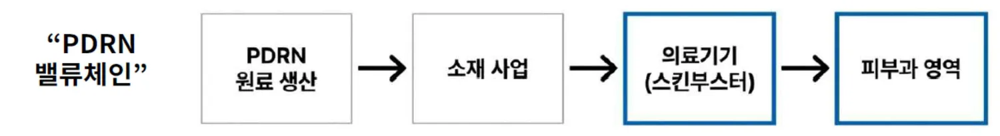
4.2.6 레드오션 및 오버슈팅 위험
에이피알은 자체적인 PDRN 원료 생산을 시작으로 소재 사업, 더 나아가 의료기기(스킨부스터) 및 피부과 시술 영역까지 아우르는 PDRN 밸류체인 확장을 본격화하고 있다. 이는 단순히 시장 하단에 머무르지 않고 주류 시장의 성능 기대치를 추격해 진정한 파괴적 혁신을 이루려는 전략적 행보로 풀이된다. 그러나 이런 야심 찬 확장 전략 이면에는 다음과 같은 위험 요소들이 도사리고 있다.
첫째, 이미 강력한 선발주자들이 포진해 있는 레드오션(Red Ocean) 시장으로의 진입에 따른 위험이다. 의료기기 및 피부과 스킨부스터 시장은 파마리서치의 ‘리쥬란’과 같이 이미 확고한 입지를 다진 제품들이 시장을 장악하고 있다. 후발주자인 에이피알이 이들과 경쟁하기 위해서는 차별화된 효능이나 압도적인 가격 경쟁력을 증명해야 하는 어려운 과제에 직면하게 된다. 또한 의료기기 시장은 일반 화장품 시장과는 달리 기술적 해자가 높고, 인허가 및 임상 시험 등 관련 규제가 극도로 복잡하고 까다롭다. 이런 높은 진입 장벽은 신규 사업의 안착을 지연시키고 예상치 못한 비용 증가를 초래할 수 있다.
둘째, 기존 핵심 고객층의 이탈을 유발할 수 있는 ‘오버슈팅(Overshooting)’ 위험이다. 에이피알의 성공은 ‘집에서 간편하게 즐기는 전문 관리’라는 가치 제안을 통해 홈 뷰티족의 니즈를 정확히 공략한 데 있다. 그러나 의료기기 및 피부과 영역으로의 확장은 필연적으로 제품의 효능과 기술 수준을 의료 전문가 수준으로 끌어올려야 함을 의미한다. 이는 기존 고객들이 추구하던 ‘간편함’이라는 가치와 상충될 수 있으며, 지나치게 전문적인 고스펙 제품은 가격 상승으로 이어져 에이피알이 강점으로 내세웠던 ‘가성비’와 ‘높은 접근성’이라는 핵심 가치를 희석시킬 위험이 크다. 결과적으로 기존 충성 고객층이 이탈하는 결과를 초래할 수 있다.
셋째, 기업 정체성의 혼란과 재무적 리스크 증가 위험이다. 대중적인 화장품 및 뷰티 디바이스 기업으로 인식돼 온 에이피알이 전문적인 재생 바이오 및 의료기기 기업으로 영역을 급격히 확장하는 과정에서 시장과 소비자에게 정체성의 혼선을 줄 수 있다. ‘화장품 vs 재생 바이오’ 사이에서 명확한 포지셔닝을 확립하지 못하면 브랜드 가치가 모호해질 수 있다. 또한 고도의 기술력이 요구되는 바이오 및 의료기기 분야의 특성상 새로운 제품 개발과 임상 시험, 인허가 획득을 위해 막대한 R&D 비용 투자가 불가피하다. 이는 단기적으로 기업의 수익성을 악화시키고 재무적인 부담을 급증시킬 수 있는 중대한 위험 요소다.
결론적으로 에이피알의 PDRN 밸류체인 확장은 성장을 위한 과감한 도전이지만 기존 강자와의 치열한 경쟁, 핵심 고객 가치와의 충돌, 막대한 투자 비용 및 정체성 혼란이라는 복합적인 위험 요소를 동반하고 있다. 이런 리스크에 대한 치밀한 대비책 없이 확장을 추진할 경우 오히려 기존의 성공 기반마저 흔들릴 수 있는 위기에 직면할 수 있다.
Ⅴ. 결론 및 시사점
5.1 에이피알 성장 전략의 일반화: 전략 전이 매트릭스
수많은 브랜드가 명멸하는 환경 속에서 에이피알이 구축한 진정한 경쟁력은 단순한 마케팅 능력이 아닌 '비가역적 자산의 내재화'에 있다. 에이피알의 성장 궤적을 Christensen의 파괴적 혁신 프레임워크로 재구성하면, 기존 시장 내 존속적 진입(Sustaining entrant) → 신시장 창출을 통한 로우엔드 파괴(Low-end disruptor) → 밸류체인 내재화를 기반으로 한 주류 시장 진입 시도(Upmarket migration)라는 세 단계의 전략적 전이로 설명할 수 있다.
그림 14. 에이피알(APR) 전략 전이 매트릭스
(출처: 필자)
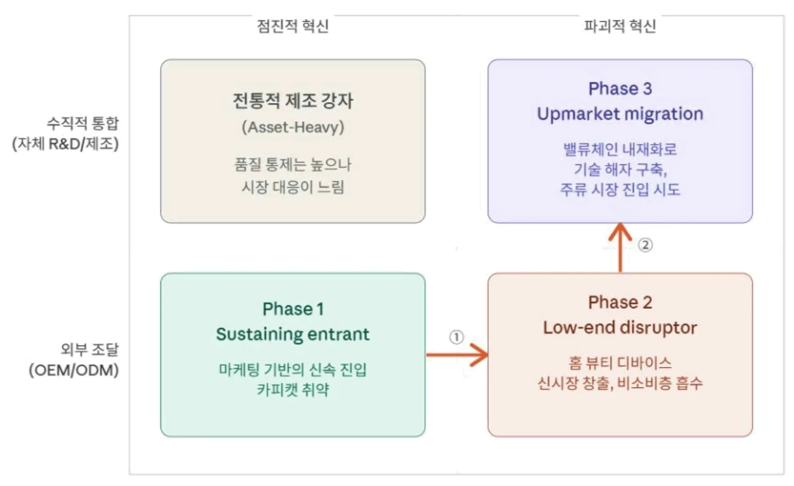
다만 이 전략 전이 매트릭스를 해석할 때 유의할 점은 비교 대상이 단일하지 않다는 것이다. Phase 2에서 에이피알은 홈 뷰티 디바이스 에이지알을 통해 고가·저접근성의 피부과 시술 시장을 파괴하고 있다. 반면 현재 에이피알이 시장 가치 측면에서 추월한 건 기존 화장품 산업의 주류 강자인 아모레퍼시픽이다. 따라서 에이피알의 전략적 포지션은 ‘피부과 시술의 하단부를 홈 뷰티 디바이스로 흡수하고, 이를 기존 사업인 화장품과 의료기기 확장으로 연결해 기존 화장품 산업의 강자와는 다른 경로로 주류 시장에 진입하는 기업’으로 정의할 수 있다. 여기서 주목할 점은 에이피알의 성장 경로에서 전략 전이가 두 개의 축, 즉 ‘혁신의 성격(점진적 → 파괴적)’과 ‘생산 방식(외부 조달 → 수직적 통합)’을 순차적으로 이동하며 이뤄졌다는 것이다. 단계별 성장 전략을 구체적으로 분석하면 다음과 같다.
1단계: 진입기(Phase 1) – Sustaining Entrant: 마케팅 기반의 신속 진입
창업 초기 에이피알은 OEM/ODM에 생산을 위탁하고 디지털 네이티브 D2C 마케팅과 비디오 커머스에 역량을 집중하는 전형적인 자산 경량화(Asset-Light) 모델을 채택했다. 이 단계에서 에이피알이 출시한 에이프릴스킨의 매직스노우쿠션, 메디큐브의 제로모공패드 등은 기존 화장품 시장의 틈새를 공략해 성능을 개선한 존속적 혁신(Sustaining innovation)의 산물이었다. 에이프릴스킨의 매직스노우쿠션은 기존 쿠션에서 커버력을 개선한 제품이었고, 메디큐브의 제로모공패드는 기존 토너에 패드를 더한 제형, 즉 물리적 형태를 개선한 제품이었다. 이 전략은 자본이 부족한 스타트업이 빠르게 시장에 안착할 수 있는 효율적인 선택이었으나, ODM 중심의 낮은 진입 장벽은 카피캣 제품의 범람을 초래하며 구조적 취약성을 드러냈다.
2단계: 확장기(Phase 2) – Low-end Disruptor: 홈 뷰티 디바이스 신시장 창출
카피캣 위기를 겪은 에이피알은 경쟁사가 쉽게 모방할 수 없는 새로운 카테고리로의 이동을 결단했다. 이 단계에서 전략의 핵심 변화는 혁신의 축이 점진적 혁신에서 '파괴적 혁신'으로 이동한 것이다. 에이피알이 2021년 론칭한 홈 뷰티 디바이스 브랜드 에이지알은 고가의 피부과 시술 시장 하단부에서 합리적인 가격과 높은 접근성이라는 대안을 제시하며 비용·접근성·두려움 등으로 시술을 시도하지 못하던 비소비층(Non-consumption)을 새로운 시장으로 흡수했다. 다만 이 시점의 에이지알 1세대 제품은 여전히 외부 OEM을 통해 제조됐다. 즉 Phase 2는 '무엇을 만들 것인가(What)'를 전환한 단계이지 '어떻게 만들 것인가(How)'까지 전환한 단계는 아니었다. 그럼에도 이 전환은 에이피알을 화장품 브랜드사에서 뷰티테크 기업으로의 정체성 변화를 이끌어낸 결정적 분기점이었다.
3단계: 도약기(Phase 3) – Upmarket Migration: 밸류체인 내재화와 주류 시장 진입 시도
Phase 3에서 에이피알은 두 번째 축, 즉 외부 조달에서 '수직적 통합'으로의 전환을 단행했다. 에이지알 2세대부터 자체 R&D 센터인 ADC(APR Device Center)와 생산 기지인 에이피알 팩토리를 구축해 기획–연구개발–제조–판매–사후관리에 이르는 전 밸류체인을 내재화했다. 이는 외부 OEM에 의존하던 Phase 2의 한계를 극복하고, 경쟁 브랜드가 단순히 ODM사에 발주해 모방할 수 없는 공정 노하우와 IP라는 기술적 해자를 구축했다. 나아가 에이피알은 PDRN 바이오 소재의 자체 생산에 착수하며 '소재–기기–브랜드'가 하나로 연결되는 생태계를 구축하고 있다. 궁극적으로는 스킨부스터 등 의료기기 영역으로의 확장을 통해 기존 피부과 시술이라는 주류 시장에 진입하는 Upmarket migration을 시도하고 있다. 다만 앞서 분석한 바와 같이 이 과정에서 레드오션 내 경쟁 심화, 기존 핵심 가치의 오버슈팅 위험, 기업 정체성 혼란 등의 리스크를 어떻게 관리하느냐가 에이피알이 진정한 파괴적 혁신 기업으로 도약할 수 있을지를 결정짓는 핵심 과제가 될 것이다.
5.2 시사점
에이피알의 성장 전략을 전략 전이 매트릭스로 일반화한 결과, K뷰티 산업에서 경쟁우위를 구축하고자 하는 기업들에 다음과 같은 시사점을 도출할 수 있다.
첫째, 모방이 빠르게 일어나는 뷰티 산업에서 지속가능한 경쟁우위를 확보하려면 기존 제품의 점진적 개선이 아닌 완전히 새로운 카테고리를 창출해야 한다. 에이피알이 제로모공패드의 카피캣 위기를 겪은 뒤 홈 뷰티 디바이스라는 새로운 카테고리를 창출한 것이 이를 잘 보여준다. ODM 중심의 낮은 진입 장벽 속에서 성분이나 제형의 차별화만으로는 경쟁 우위를 지킬 수 없었지만, 특허와 기술 요소가 내재된 새로운 카테고리를 만들자 기존 화장품과는 완전히 다른 경쟁 구조가 형성됐다.
이 시사점은 후발 주자들에만 해당하는 것이 아니다. 한국 뷰티 시장과 K뷰티 유통 채널인 CJ올리브영의 비즈니스 모델을 분석한 케이스 스터디를 저술한 하버드경영대학원의 레베카 카프 교수는 필자와의 화상 인터뷰에서 "뷰티 산업에서 점진적 제품 개발은 너무 쉽게 복제된다"고 지적하며 "대형 뷰티 기업의 리더들에게 다음 카테고리를 고민해야 한다고 조언하고 싶다"고 말했다. 기존 제품의 품질을 조금씩 개선하는 것이 아니라 완전히 새로운 카테고리 중심의 혁신을 고민해야 한다는 것이다. 에이피알 사례는 스타트업뿐 아니라 아모레퍼시픽과 같은 기존 강자에게도 점진적 개선에 안주하지 않고 새로운 카테고리를 선제적으로 창출해야 파괴적 혁신자에게 시장을 내주지 않을 수 있다는 시사점을 준다.
둘째, 파괴적 혁신자의 성장은 단일 제품의 성공만으로는 충분하지 않으며 Whole Product 시스템이 뒷받침돼야 한다. 에이피알이 캐즘을 돌파하고 대중 시장에 안착할 수 있었던 핵심 요인은 디바이스 하드웨어의 기술력만이 아니었다. 디바이스와 화장품의 결합, 앱 연동을 통한 사용 가이드, 데일리 루틴 콘텐츠까지 포함한 완결된 사용 경험이 실용주의적 다수 소비자의 진입 장벽을 낮췄다. 뷰티 산업에서 새로운 카테고리를 창출하더라도 핵심 기술만으로는 대중 시장까지 도달하기 어렵다. 소비자가 제품을 구매한 뒤 실패 없이 가치를 체감할 수 있는 시스템 전체를 설계해야 초기 수용자를 넘어 주류 시장으로 확장할 수 있다.
셋째, 혁신의 방향(What)과 실행 방식(How)은 동시에 전환하기보다 순차적으로 이행하는 것이 효과적이다. 에이피알의 전략 전이 매트릭스가 보여주듯 Phase 1에서 Phase 2로의 전환은 혁신의 축(점진적 → 파괴적)을 바꾼 것이고, Phase 2에서 Phase 3로의 전환은 생산 방식의 축(외부 조달 → 수직적 통합)을 바꾼 것이다. 만약 에이피알이 처음부터 새로운 카테고리 창출과 밸류체인 내재화를 동시에 시도했다면 자본과 조직 역량의 한계로 두 가지 모두 실패했을 가능성이 높다. 에이피알은 먼저 OEM을 활용해 새로운 카테고리의 시장성을 검증한 뒤 시장 반응이 확인된 다음, 밸류체인 내재화에 착수했다. 자원이 제한된 스타트업이 파괴적 혁신을 시도할 때는 한 번에 하나의 축만 이동하는 단계적 접근이 리스크를 관리하면서 성장할 수 있는 현실적인 경로임을 시사한다.
각주
- 이 영상을 찍고 4년 뒤 이 회사는 시총 8조를 넘어 국내 최고가 되었다 | 에이피알 김병훈, EO Korea, 2020. 9. 24. ↩
- 이 영상을 찍고 4년 뒤 이 회사는 시총 8조를 넘어 국내 최고가 되었다 | 에이피알 김병훈, EO Korea, 2020. 9. 24. ↩
- 한국이 피부 시술 미국보다 싸면서 잘하는 이유, 미주중앙 디지털팀, Korea Health Trip, 2025-07-30 ↩
- 레이저로 피부에 홀을 내 진피층의 콜라겐과 탄력 섬유들의 활성화를 유도해 피부 재생을 유도하는 시술 ↩
Reference
- 곽소영, 신다솜, 허유경, 홍수경, 최예지, "미세전류, 중주파 기능이 탑재된 가정용 미용기기가 안면 피부 탄력 및 리프팅에 미치는 영향," 한국미용학회지, 29권, 6호, 1505–1514쪽, 2023년.
- 관세청, 케이(K)-화장품, 3분기 역시 최대실적, 보도자료, 2025년 10월 17일.
- 김동규, "韓 메모리·변압기·마스크팩 수출 '세계 1위' 등극," 연합뉴스, 2026년 3월 17일.
- 남준우, "에이피알, '미디어커머스'에서 '뷰티 테크'로 진화한다," 더벨, 2023년 3월 3일.
- 미주중앙 디지털팀, "한국이 피부 시술 미국보다 싸면서 잘하는 이유," Korea Health Trip, 2025년 7월 30일.
- 박소연, 박성래, "ADC(APR Device Center) 신재우 대표: 건강한 피부를 위한 끊임없는 연구, 아름다운 삶을 위한 ADC(APR Device Center)의 혁신적인 기술," 월간인물, 96권, 114–117쪽, 2023년 5월.
- 박솔, 세계 수출시장 1위 품목으로 본 우리 수출의 경쟁력, Trade Brief No. 09, 한국무역협회 국제무역통상연구원, 2026년 3월 18일.
- 박종대, 안도현, 화장품 산업분석의 기초(1)–채널편, 하나금융투자, 2022년 1월 12일.
- 산업통상자원부, 2025년 연간 및 12월 수출입 동향, 2026년 1월 1일.
- 식품의약품안전처, '25년 K-뷰티 수출, 114억 달러로 역대 최대치 경신, 2026년 1월 9일.
- 아모레퍼시픽, 2025년 연간 실적, 2026년 2월 6일.
- 에이피알, 에이피알 2024년 사업보고서, 금융감독원 전자공시시스템(DART), 2025년 3월 21일.
- 에이피알, 에이피알 2025년 사업보고서, 금융감독원 전자공시시스템(DART), 2026년 3월 23일.
- 이다연, 한유정, 에이피알(278470), 한화투자증권, 2024년 12월 6일.
- 최호진, "국내 시가총액 1위 K뷰티 기업 된 에이피알," 동아비즈니스리뷰, 2025년 12월 Issue 2.
- 최호진, "신생 산업에선 혁신 통해 경계 확장 성숙 단계일 땐 경쟁사 모방 전략 유용," 동아비즈니스리뷰, 2025년 12월 Issue 1.
- EO Korea, "이 영상을 찍고 4년 뒤 이 회사는 시총 8조 원을 넘어 국내 최고가 됐다 | 에이피알 김병훈," 2020년 9월 24일.
- J. L. Bower and C. M. Christensen, "Disruptive Technologies: Catching the Wave," Harvard Business Review, vol. 73, no. 1, pp. 43–53, January–February 1995.
- C. M. Christensen, The Innovator's Dilemma: When New Technologies Cause Great Firms to Fail, Harvard Business School Press, Boston, MA, USA, 1997.
- C. M. Christensen and M. E. Raynor, The Innovator's Solution: Creating and Sustaining Successful Growth, Harvard Business School Press, Boston, MA, USA, 2003.
- C. M. Christensen, M. E. Raynor, and R. McDonald, "What Is Disruptive Innovation?," Harvard Business Review, vol. 93, no. 12, pp. 44–53, December 2015.
- R. Karp and S. Lin, "Olive Young: Formulating Beauty Innovation," Harvard Business School Case 725-392, January 2025.
- G. A. Moore, Crossing the Chasm, Harper Business, New York, NY, USA, 1991.
- E. M. Rogers, Diffusion of Innovations, 3rd ed., Free Press, New York, NY, USA, 1983.